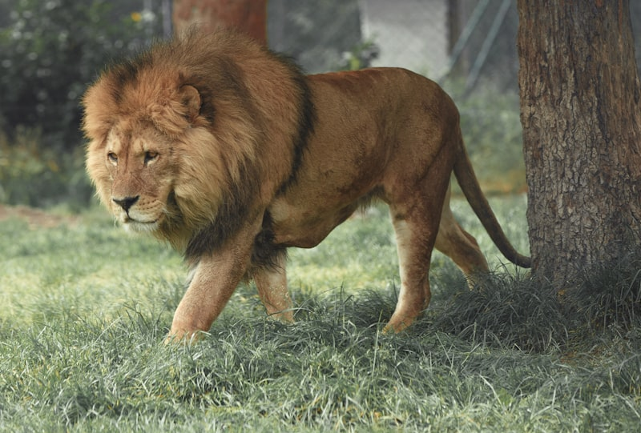

Big Cats
Lions are majestic predators known for their powerful roars and iconic manes. They live in social groups called prides, primarily inhabiting African savannas.
Tigers, the largest members of the cat family, are renowned for their distinctive striped coat and formidable hunting skill. They are solitary, territorial predators, native to parts of Asia from the Siberian tundra to the Sundarbans mangrove forest.

Leopards are powerful, elusive big cats recognized for their rosette- spotted coats and incredible agility. They are solitary hunters that climb trees with ease and are found across sub-Saharan Africa and parts of Asia, adapting to forests, grasslands, and even mountainous terrain.
Jaguars are the largest cats in the Americas, instantly recognizable by their dark rosettes with central spots. They are powerful swimmers and apex predators, roaming rainforests and wetlands from Mexico to northern Argentina.
Cheetahs are the fastest land animals, capable of reaching speeds up to 70 mph. They are slender, with a long tail and spotted coat, and are primarily found in the savannas and grasslands of Africa.
Snow leopards are elusive big cats native to the mountain ranges of Central and South Asia. They have thick fur, long tails, and large paws that help them navigate their cold, rugged habitat. Snow leopards are solitary hunters, primarily preying on mountain ungulates and small mammals.
Pumas, also known as cougars or mountain lions, are large, solitary cats native to the Americas. They are adaptable predators, found in a wide range of habitats from mountainous forests to open plains.